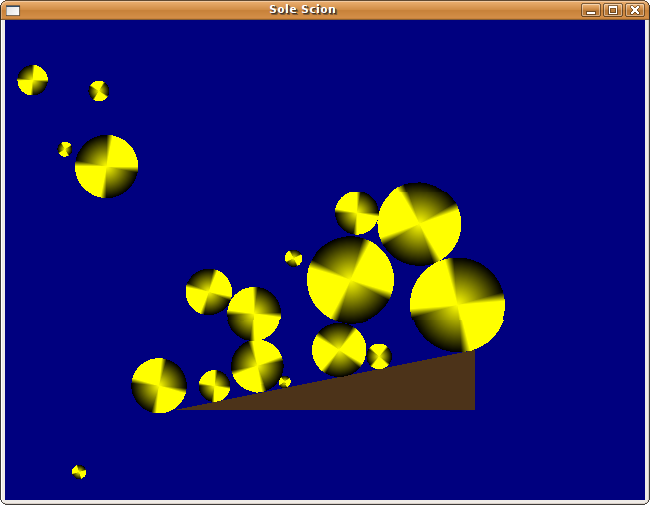

Sole Scion project v0.1 : A 2D rigid-body Python game

Everyone today is abuzz with the 'release early, release often' sentiment, so I've decided to get in the spirit and upload the first iteration of 'Sole Scion', my summertime sabbatical game project.
Version 0.1 merely bounces some circles off an inclined plane (pictured.) I aim to transform this into a 2D graphical adventure game, in which I hope emergent fun will take place, once I populate the world with enough twisty corridors, uniquely-shaped objects that need slotting into the right places, and judicious instances of ornery fauna to contend with.
It's written in Python, using Chipmunk for rigid body Newtonian dynamics, with Python bindings using Pymunk. Rendering, gameloop, sounds, etc are handled by pyglet.
Sole Scion is hosted on Google Code, with Subversion read-access and a source code tarball, including the redistributables for the above dependencies, should anyone be curious. It has a New BSD License.
Feedback, thoughts and ideas, very welcome.
Update: I've only run it on Linux, but reportedly it also works on Windows. Thanks Xtian!
Update: It also reportedly works under PyPy, provided you install the 'functools' module. Thanks Maciej!
Comments
Comments powered by Disqus